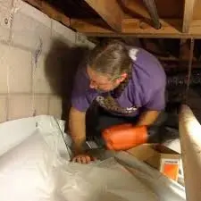

Attic & Crawl Space HVAC Installation San Diego
Maximizing your home's comfort shouldn't mean sacrificing valuable living space. At EZ Heat and Air, we specialize in HVAC installations for tricky areas like attics and crawl spaces.
Our NATE-certified technicians ensure that your system is properly mounted, insulated, and ventilated for peak performance. We offer professional maintenance and installation across all of San Diego.
Whether you're looking for a traditional central system or a flexible ductless solution, we have the expertise to make it work for your unique home layout.
San Diego Attic & Crawl Space HVAC Installation Services
Attic & Crawl Space HVAC Installation
Comprehensive Solutions For Locating Your Entire System In Unoccupied Areas To Save Living Space and Reduce Indoor Noise.
Crawl Space Heater Installation
Specialized Installation Of Heating Units In Crawl Spaces to Ensure Efficient Heat Distribution Throughout Your Ground Floors.
Attic HVAC Systems Installation
Expert Mounting and Ventilation For Cooling Systems in Attic Spaces, Primarily Beneficial For Multi-Story Houses.
Ductless HVAC Installation
Efficient and Flexible Solutions For Homes Where Traditional Ductwork Installation Might Be Challenging or Impossible.
Reliable HVAC Installation Services for Every Need in San Diego, CA!
The process begins with a detailed evaluation of your home's architecture. We assess the structural integrity of your attic or crawl space to ensure it can safely support the necessary equipment.
Effective moisture prevention and temperature control are our top priorities. By utilizing unoccupied areas, we provide a streamlined installation that doesn't interfere with your interior design.
With upfront pricing and same-day consultations, we make it easy to upgrade your home comfort. Trust EZ Heat and Air for all your specialized HVAC installation needs.

24/7
Service
Same-day Plumbing Service For Any Issue Or Concern Related To Leakage, Clogging, Or Malfunctioning Of Appliances.

FREE
Estimate
Request a quote and get a free estimate for installation, repair, and replacement services from professionals.

FREE
Service Call
From plumbing repairs to full replacements, connect with our experts to inquire about services at zero charges.

15%
Discount Available
15% Off to the Police, Military, Fire Seniors and Teachers for Services up to $1000.

FINANCING
Available
Overcome financial barriers and keep your plumbing system up to date with our alternative financing options.
Don’t Let Plumbing Issues Interrupt Your Comfort & Budget
CALL EXPERTS NOW
 (760) 392 7616
(760) 392 7616
What Our Clients Say About Us

"We needed emergency HVAC services, and they were there in no time. Their services are exceptional, and the team is always friendly and professional. They make sure everything is working perfectly and provide helpful tips to keep our system running smoothly."
Amanda R. - Orange County
"I’ve had my air conditioner maintained by this company for years. They always provide great service, and my system runs efficiently because of their routine checks. Their team is knowledgeable, and I always feel confident in their work. I wouldn’t trust anyone else for my HVAC needs."
Mark T. - San Diego
Benefits of Professional Attic & Crawl Space HVAC Installation
- Moisture Prevention: Proper installation include vapor barriers and ventilation to protect your system from excessive humidity.
- Space Conservation: Free up closets and utility rooms by relocating your HVAC units to unoccupied spaces.
- Reduced Noise: Moving mechanical equipment out of living areas significantly reduces indoor ambient noise during operation.
- Enhanced Efficiency: Professional technicians optimize duct runs for the shortest possible path, maximizing airflow and efficiency.
Enjoy total comfort and peace of mind with our expert installation services. We prioritize your home's structural integrity and energy performance above all else.

FAQs
It involves locating HVAC units and ductwork in the unoccupied spaces between the ceiling and roof (attic) or beneath the ground floor (crawl space).
These installations save living space, are often easier to access for maintenance, and can be more efficient for certain home architectural layouts.
Most homes with these spaces can accommodate HVAC systems, though our technicians perform a thorough evaluation to ensure proper structural support and ventilation.
Principal benefits include space conservation, reduced noise in living areas, and potentially lower installation costs for specific HVAC configurations.
Our expert technicians assess your home's size, layout, insulation, and your specific comfort needs to recommend the most efficient and reliable system.